| Technology Cluster | Mean Academic Share | Mean Media Share | Academic–Media Gap |
|---|---|---|---|
| Generative AI | 9.3% | 4.3% | +5.1% |
| Algorithms & Recommendations | 6.0% | 1.3% | +4.7% |
| E-Commerce | 5.7% | 1.0% | +4.7% |
| Tracking & Wearables | 4.1% | 0.5% | +3.6% |
| Gaming & Digital Platforms | 5.7% | 2.3% | +3.4% |
| Auctions & Pricing | 1.8% | 0.0% | +1.8% |
| Mobility & Transportation | 2.0% | 0.6% | +1.4% |
| Crypto & Fintech | 4.0% | 2.8% | +1.3% |
| AR, VR & Robots | 2.5% | 1.9% | +0.6% |
| Computers & Software | 8.9% | 8.9% | +0.1% |
| Smartphones & Apps | 10.0% | 10.8% | -0.8% |
| Search & Advertising | 8.4% | 9.9% | -1.6% |
| Streaming, Audio & Video | 3.0% | 5.8% | -2.8% |
| Other | 6.7% | 10.4% | -3.7% |
| Internet & Broadcasting | 8.1% | 16.4% | -8.3% |
| Social Media | 13.7% | 23.2% | -9.6% |
Appendix E — Academic–Media Attention: Coverage Differences and Temporal Alignment
We compared academic and media attention to the 16 technology clusters in two complementary steps. First, we examined how each corpus distributed attention across the clusters on average. This cross-sectional comparison identifies technology clusters that occupy a relatively larger share of academic or media discourse. Second, we examined whether annual changes in attention followed similar temporal trajectories and whether media attention tended to precede academic attention.
The temporal analysis serves a specific interpretive purpose. A lower academic attention share could reflect a persistent difference in research coverage, but it could also arise because academic publication responds more slowly to developments that have already become visible in media discourse. We therefore use the lag analysis to assess whether the cross-sectional discrepancies can be explained by a general delay in academic attention.
E.2 Cross-Sectional Comparison of Attention
We summarized the relative allocation of attention across 2008–2025, the period for which Media Cloud coverage is sufficiently systematic and the academic data cover complete publication years. For each cluster, we calculated its mean annual academic and media attention shares. Averaging annual shares gives each year equal weight and prevents the substantially larger publication and media volumes in recent years from dominating the comparison.
We defined the academic–media attention gap as
\[ G_c = \overline{A}_c - \overline{M}_c, \]
where \(\overline{A}_c\) and \(\overline{M}_c\) denote the mean annual academic and media attention shares for cluster \(c\). Positive values indicate that a cluster occupies a larger share of academic attention, whereas negative values indicate that it occupies a larger share of media attention.
The gap is descriptive and relative. Media coverage does not provide a normative benchmark for the amount of academic attention a technology should receive. Instead, the comparison identifies technology clusters for which the distribution of attention differs most strongly across the two corpora.
As a robustness check, we also calculated pooled attention shares by dividing each cluster’s total count across 2008–2025 by the total count across all clusters and years in the same corpus. Unlike the mean annual shares, the pooled estimates give greater weight to high-volume years.
E.3 Cross-Correlation Across Lags
The cross-sectional comparison identifies differences in average attention, but it cannot establish whether these discrepancies reflect persistent differences in coverage or delayed academic responses. We therefore evaluated the temporal correspondence between the annual academic and media attention-share series.
For each of the 16 technology clusters, we calculated the Pearson correlation between academic and media attention shares at every integer lag from \(-5\) to \(+5\) years:
\[ r(L) = \operatorname{corr}(A_t, M_{t-L}), \]
where \(A_t\) is the academic attention share in year \(t\), \(M_t\) is the media attention share, and \(L\) is the tested lag.
We interpret the lag as follows:
- \(L > 0\): media attention leads academic attention by \(L\) years;
- \(L = 0\): academic and media attention move concurrently;
- \(L < 0\): academic attention leads media attention by \(|L|\) years.
We calculated each correlation from all years for which both observations were available. We left a lag undefined when fewer than three paired years were available. For each cluster, we defined the best lag as the value of \(L\) with the highest signed correlation. We also report the correlation at lag 0 for comparison.
E.4 Circular-Shift Permutation Test
A conventional Pearson test would overstate significance because annual attention shares are autocorrelated and because we searched across 11 lags before selecting the highest correlation. We therefore used a circular-shift permutation test.
For each cluster, we shifted the media series by a randomly selected nonzero offset while preserving its internal order and autocorrelation. We then repeated the complete lag search and recorded the highest signed correlation. We repeated this procedure 1,000 times using a fixed random seed.
The empirical permutation \(p\)-value was
\[ p = \frac{ 1 + \#\{\text{permuted maxima} \geq \text{observed maximum}\} }{ 1 + \text{number of valid permutations} }. \]
This test compares the observed best-lag correlation with a null distribution that incorporates both the autocorrelation of the media series and the search across all 11 lags.
E.5 Visualization
We visualize the cross-sectional comparison as a scatterplot of mean annual academic against media attention shares. A diagonal line represents equal attention shares in the two corpora, and the distance from that line represents the academic–media attention gap. A ranked gap plot provides a complementary display of the direction and magnitude of these differences.
For the temporal comparison, we plot the annual academic and media attention shares together with their 3-year centered rolling averages. The rolling averages are used only for visualization; the correlations and permutation tests use the unsmoothed annual series.
E.6 Results
E.6.1 Cross-Sectional Differences in Attention
Table E.1 reports the mean annual attention shares and their differences for the 16 technology clusters. Academic attention exceeded media attention most strongly for Generative AI (5.1 percentage points), Algorithms & Recommendations (4.7 percentage points), and E-Commerce (4.7 percentage points). Media attention exceeded academic attention most strongly for Social Media (9.6 percentage points), Internet & Broadcasting (8.3 percentage points), and Other (3.7 percentage points). Computers & Software showed the most similar mean attention shares across the two corpora.
The ranking of the attention gaps was highly similar when we calculated shares from pooled counts rather than mean annual shares (Spearman’s \(\rho = 0.971\)). The substantive pattern therefore does not depend strongly on whether each year receives equal weight or years are weighted by corpus volume.
The cross-sectional comparison reveals a distinct academic attention profile rather than a uniform correspondence with media visibility. Themes receiving comparatively greater academic attention tend to involve bounded consumer interactions that can be instantiated, manipulated, or linked to observable outcomes. These include recommendations, online purchasing, self-tracking, gaming environments, and generative-AI interactions. Themes receiving comparatively greater media attention more often represent broad platforms, communication environments, or infrastructures.
One possible explanation is methodological tractability. Technologies that can be represented as discrete interfaces, treatments, or decisions may be easier to operationalize within prevailing empirical designs than technologies whose consequences are diffuse, continuous, socially embedded, or cumulative. The present analysis does not measure operationalizability directly, so this interpretation remains provisional. The differences may also reflect the substantive scope of consumer-research journals, data access, editorial priorities, or differences in how mature technologies are named.
The comparatively lower academic shares of several established technologies are also consistent with a potential normalization gap. Once technologies become embedded in ordinary consumer environments, researchers may no longer identify them as explicit objects of technology research. Conversely, the comparatively large academic share devoted to Generative AI, together with its rapid recent growth, is consistent with concentrated attention around a highly visible emerging technology. Neither pattern establishes that a theme is objectively over- or underresearched; instead, the comparison identifies discrepancies that require substantive interpretation.
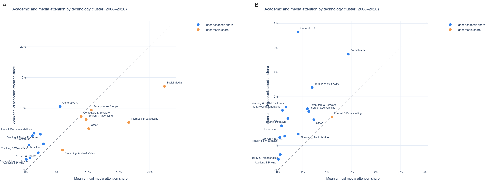
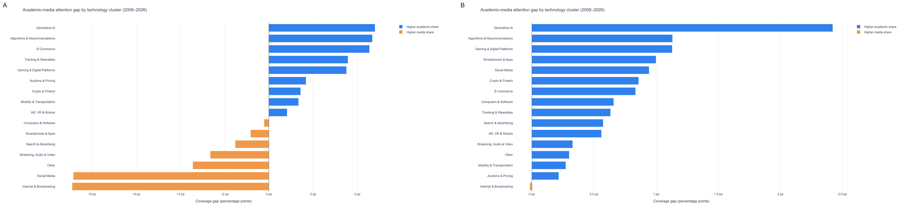
E.6.2 Do the Discrepancies Reflect Delayed Academic Attention?
We assessed this using two attention-share bases (see “Comparable Annual Attention Shares” above): relative shares, where each cluster’s mentions are expressed as a share of tech-flagged mentions only, and absolute shares, where each cluster’s mentions are expressed as a share of all publications or newspaper articles that year, tech-related or not. The two bases can diverge if a cluster’s prominence among tech-flagged mentions does not match its footprint in the wider publication or news landscape.
E.7 Cluster-Level Attention Plots
Figure E.1 compares annual academic and media attention shares for all 16 technology clusters. Each cluster’s plot has two panels: Panel A (left) shows the relative-share basis (share of tech-flagged mentions only); Panel B (right) shows the absolute-share basis (share of all publications/articles that year). The faint points and lines show the annual values; the heavier lines show the 3-year centered rolling averages.
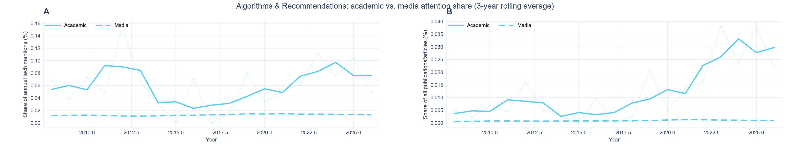
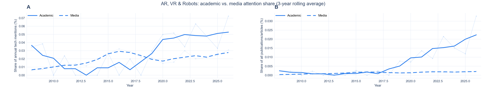
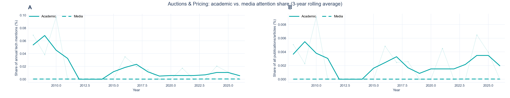
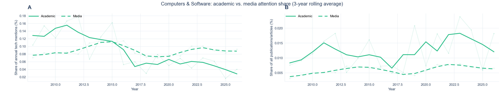
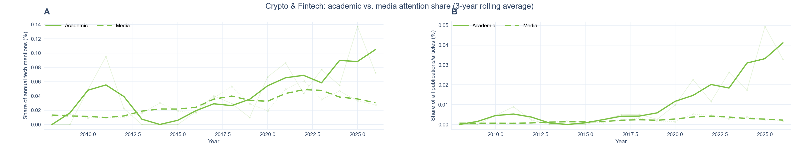
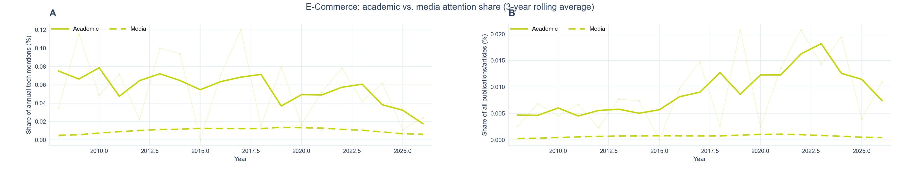
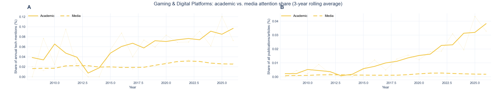
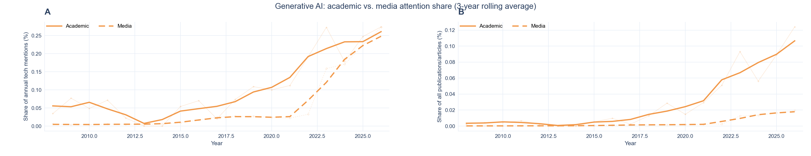
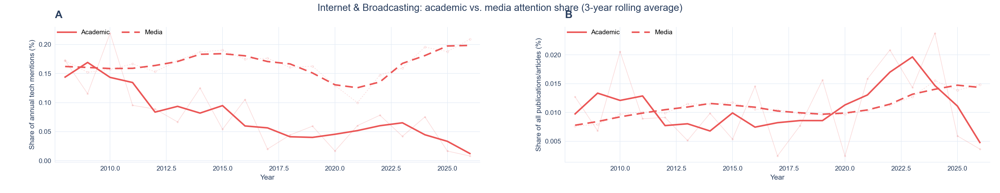
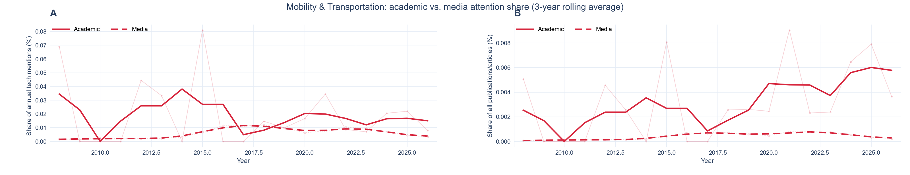
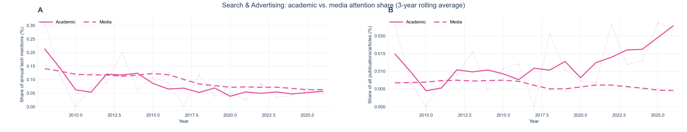
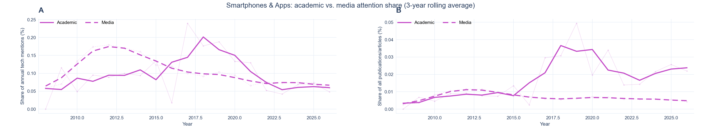
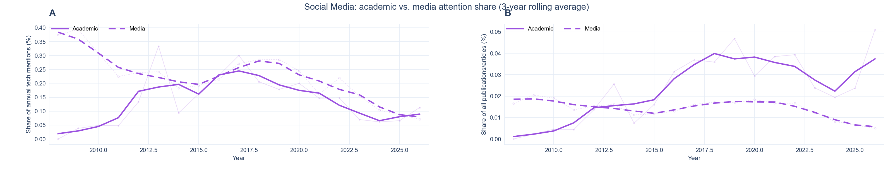
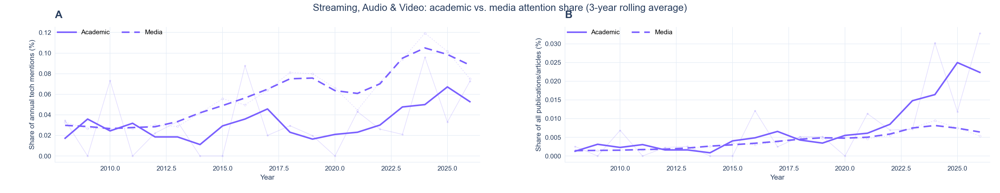
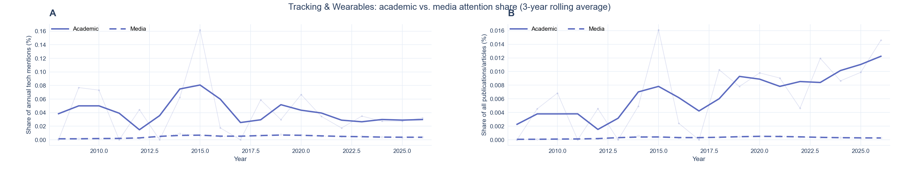
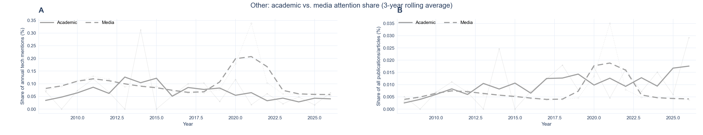
E.8 Integrated Interpretation
The cross-sectional and temporal analyses address two linked explanations for academic–media discrepancies. The cross-sectional comparison shows that the two corpora allocate attention differently across technology clusters. The lag analysis then tests whether these discrepancies can be explained by academic attention arriving later.
The temporal results provide little support for a general lag explanation. Most clusters did not show statistically reliable correspondence at any tested lag. Generative AI reflects a shared attention surge rather than a clearly identified delay, whereas AR, VR & Robots provides the clearest case in which media attention preceded academic attention.
The combined evidence therefore indicates that academic–media discrepancies primarily reflect differences in the selection and relative emphasis of technology themes rather than a uniform delay in academic response. Temporal displacement contributes to particular cases, but it does not account for the broader pattern of attention gaps.